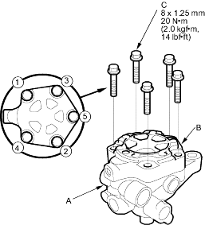
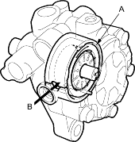
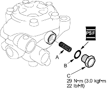
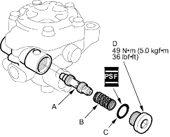

- Align the bolt holes in the cover (B) with the threaded holes in the pump housing. Install the five flange bolts (C) loosely first, then torque the flange bolts in 2 or more steps with sequence shown.

- Push in the cam ring (A) from the pump housing cap hole (B) with a flat blade screwdriver, to make sure the cam ring is fully seated against the outer case.

- Install the pump preload spring (A) in the pump housing.

- Coat the new 12.7 mm O-ring (B) with power steering fluid, and install it on the pump housing cap (C).
- Install the pump housing cap (C) on the pump housing, and tighten it to specified torque.
- Coat the pressure control valve (A) with power steering fluid, and install pressure control valve and spring (B) on the pump housing.

- Coat the new 16.7 mm O-ring (C) with power steering fluid, and install it on the flow control valve cap (D).
- Install the flow control valve cap (D) on the pump housing, and tighten it to the specified torque.